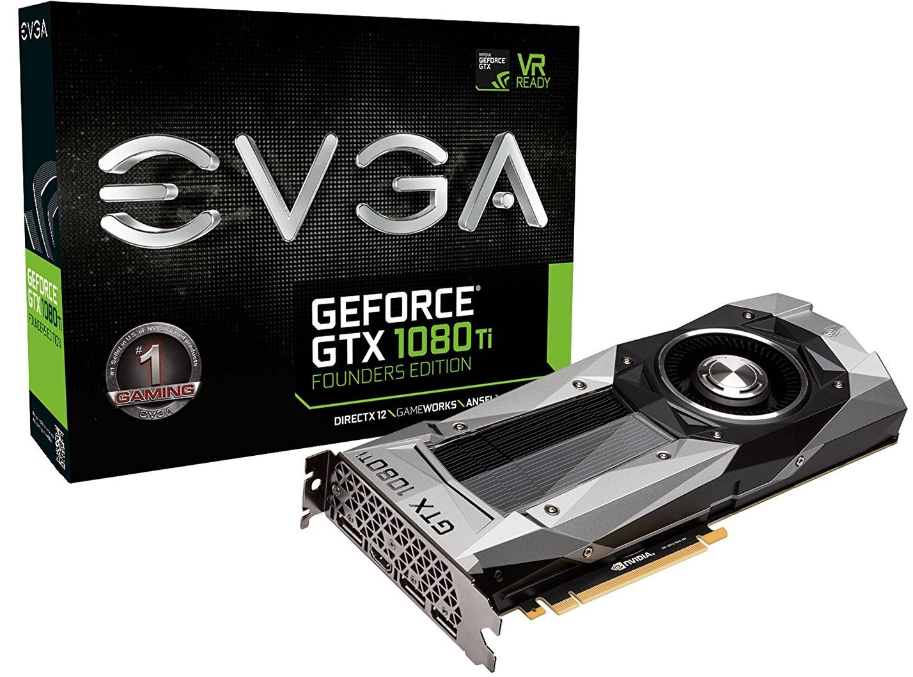
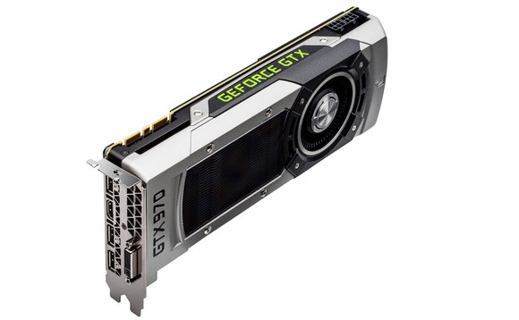

O que são Placas De video
Uma placa de vídeo é o componente do hardware do computador responsável por administrar e controlar as funções de exibição de vídeo na tela. Todo computador contemporâneo usa uma interface gráfica. A placa gráfica faz com que essa interface salte aos olhos através do LCD.

Para entender como a GPU trabalha, e a importância de sua atuação, basta pegar como exemplo um computador com uma tela cuja resolução máxima alcança 1366 x 768 pixels, valor bastante comum em notebooks atuais.
Tal tela, não importa quantas polegadas tenha, é formada por uma largura de 1366 pixels (pontos) e altura de 768 pixels (pontos). Isso significa que o display tem um total de 1.049.088 pixels para serem iluminados. Cada ponto desses tem uma coordenada, uma determinada cor e comportamento. Quem gerencia
Esses milhões de pontos estão em constante mutação, como em um jogo ou durante a exibição de um filme em tela cheia. A placa gráfica coordena o espetáculo por trás dos panos, administrando as variadas situações a que cada ponto estará vinculado em termos de luminosidade e cor em instantes muito curtos.
Existem dois grandes grupos de placas de vídeo. As mais simples, destinadas ao usuário comum, e as mais poderosas, voltadas para gamers e entusiastas de hardware.
AMD

NVIDIA

A Nvidia GeForce GTX 1070 chegou com um preço sugerido de US$ 449, bastante elevado porém dentro da premissa que a Nvidia parece ter introduzido de cobrar caro em seu modelo de referência. No modelo das parceiras temos um lançamento semelhante à GTX 970: o preço sugerido é de a partir de US$ 379, sendo que a Gigabyte GeForce GTX 1070 G1 Gaming é encontrada por US$ 429. No Brasil, a placa chegou na casa dos R$ 2.699 em sua versão Founders Edition, sendo que a G1 Gaming pode ser encontrada por valores pouco superiores a R$ 2599.
Assim com a GeForce GTX 1080, a GTX 1070 é equipada com o chip GP104, porém nesse modelo temos parte da GPU desativada. Como resultado, temos um chip gráfico com 15 multiprocessadores stream com um total de 1920 núcleos CUDA e 120 unidades de textura. Diferente da GTX 1080, que chegou com o uso da nova tecnologia GDDR5X, a GeForce GTX 1070 chega equipada com um total de 8GB da tradicional memória GDDR5, operando na interface de 256-bit e fornecendo uma largura de banda de até 256 GB/s. Assim como a GTX 1080, ela conta com uma tecnologia de compressão que consegue reduzir em torno de 20% o tráfego de dados e dessa forma é capaz de otimizar o uso da banda disponível.
Em seu modelo referência o chip GeForce GTX 1070 opera em 1506MHz podendo alcançar 1683MHz no modo turbo boost. A Gigabyte "acelerou" seu modelo G1 Gaming com a GPU operando na frequência de 1594MHz com saltos para 1784Mhz em Turbo Boost. Além da maior quantidade de transistores e boa estabilidade através da litografia FinFET em 16 nanômetros, outra vantagem foi uma evolução em termos de eficiência energética. A GeForce GTX 1070 opera com apenas um conector de 8 pinos e possui um TDP de 150W.